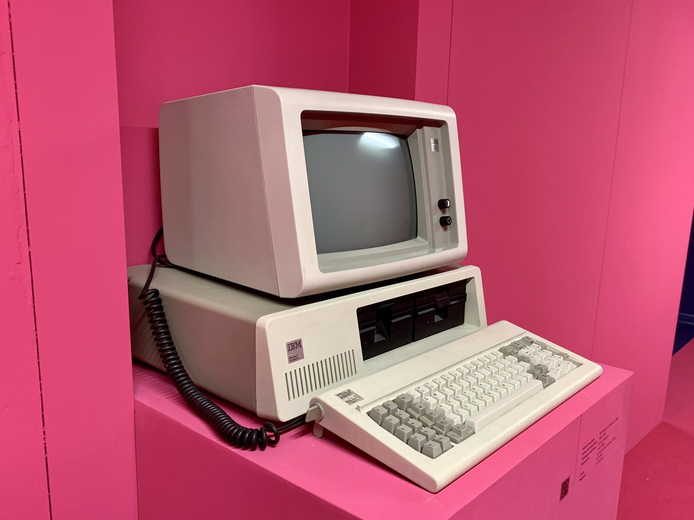
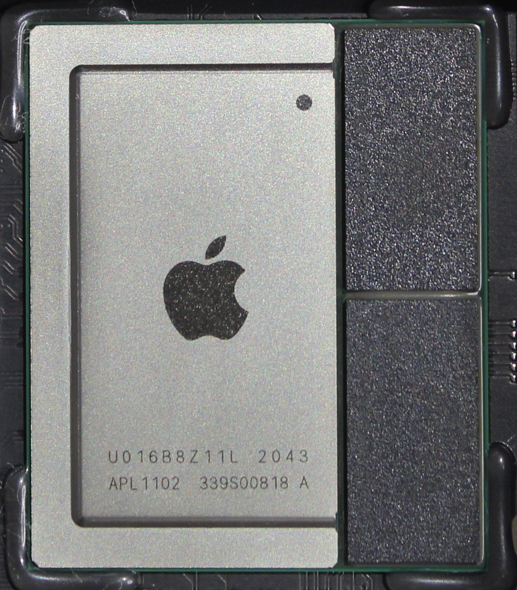
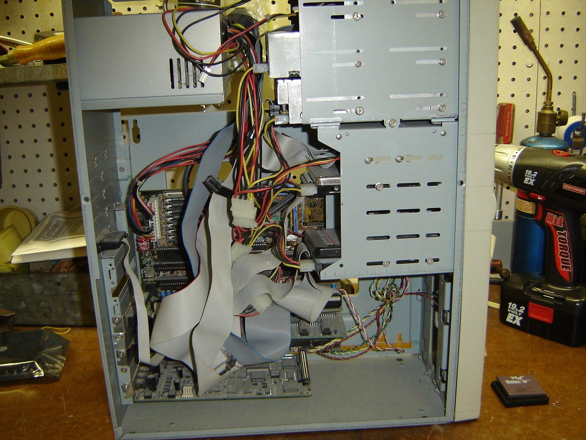
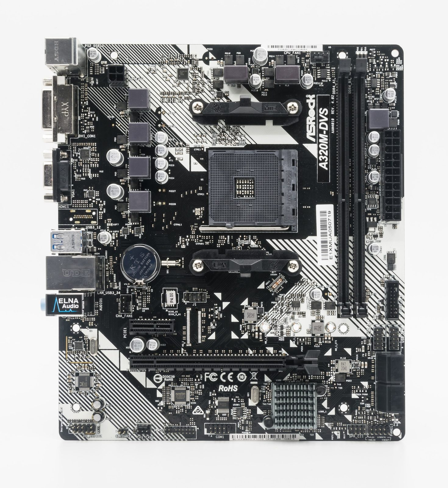
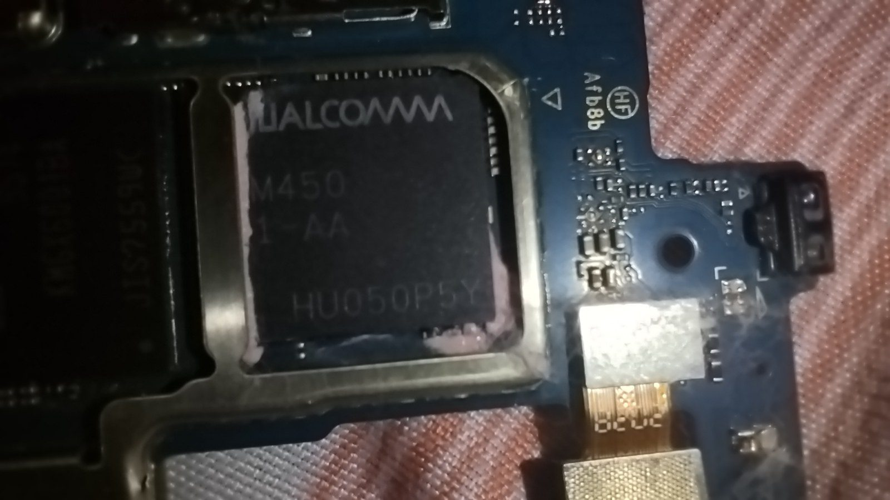

Unit 1 · Lesson 7
How the parts talk
The CPU, the RAM, the GPU and the SSD are separate parts. So how do they talk to each other? In a PC they meet on one board. In your phone, most of them live on one chip.
The story
In 1981 IBM started selling the IBM Personal Computer, the IBM PC. Inside the box there was one main board. IBM called it the "system board"; today we call it the motherboard. The processor (CPU), the memory chips and the slots for extra cards were all on that one board.

.jpg){kind=link}
A motherboard is covered in thin copper lines called traces. Each trace connects one part to another. Electrical signals travel along these copper paths in billionths of a second. So the CPU can ask the RAM for a number and get it back almost at once. Almost every PC since 1981 is built the same way: a motherboard with sockets and slots, and parts that plug into it.
Phones had a problem. A board with many separate chips takes space and uses a lot of battery. So phone makers put the CPU, the GPU and the memory controller (the part that talks to the RAM) on one chip: a system on a chip, or SoC. Phones led the way: the first iPhone, in 2007, already ran on one.
In 2020 Apple's M1 chip brought the same idea to laptops like the MacBook Air. Inside one chip the distances are tiny, so the signals need less energy. That saves battery and space: a thin laptop can stay cool and last all day.


Inside your computer today: a motherboard in every desktop PC and laptop, and an SoC in every phone and in many thin laptops.
The science
Inside the box
The box is not the CPU: the CPU is one small chip inside it. Every part has one job. The CPU follows the instructions: it is the cook. RAM is the workbench: fast, but it forgets when the power goes. Storage (an SSD or a hard disk) is the pantry: it keeps everything. The GPU is a team of thousands of simple cooks that draw the pixels. The power supply turns mains electricity into the low voltage the parts need. Ports are sockets on the edge of the board for cables: USB, the screen, the network.
- The cook = CPU core
- The metronome = clock (GHz)
- The countertop = cache
- The workbench = RAM
- The pantry = storage (SSD / HDD)

.jpg){kind=link}
The motherboard: where every part meets
The motherboard is the big board that every part plugs into. It has a socket for the CPU, slots for the RAM and for a graphics card, connectors for the SSD, and ports on its edge. Copper traces join them. When you open a photo, its bits leave the SSD, travel along the traces to the RAM, and the CPU works on them there. In the kitchen, the motherboard is the floor of the kitchen: the cook, the workbench and the pantry all stand on it, close enough to pass things in billionths of a second.
- The cook = CPU core
- The metronome = clock (GHz)
- The countertop = cache
- The workbench = RAM
- The pantry = storage (SSD / HDD)


The whole kitchen on one chip
A system on a chip (SoC) puts the CPU cores, the GPU and the memory controller on one piece of silicon. Phones also add the radios and the camera's image processor. The RAM chips sit right next to it. Short distances mean less energy and less space: that is why a phone lasts a day on a small battery. The price: you cannot change one part. If you want a faster CPU, you need a new phone.
- The cook = CPU core
- The metronome = clock (GHz)
- The countertop = cache
- The workbench = RAM
- The pantry = storage (SSD / HDD)


Phone or PC: same jobs, different packing
A phone and a PC do the same four things: input, process, output, storage. Both run fetch, decode, execute. The difference is the packing. A desktop PC has separate parts on a big board: easy to repair and upgrade, but it needs more power and space. A phone has one SoC and memory chips soldered to a tiny board: small and efficient, but you cannot upgrade it.
Check now
Quick questions. You see the answer at once.
Which part turns mains electricity into what the other parts need?
- the motherboard
- the power supply
- the GPU
On a motherboard, signals travel along copper paths in billionths of a second.
True or false?
What is a system on a chip (SoC)?
- the SIM card
- the CPU, the GPU and the memory controller on one chip
- the phone's battery
Try it
A laptop listing is a list of parts. Click each line to see which part it is and what the number means. Then choose a device for each person.
Paper version
A laptop listing, line by line. Intel Core i5, 10 cores, up to 4.6 GHz: the CPU. 10 cores = 10 cooks; the metronome beats up to 4.6 billion times a second. · 16 GB RAM: the workbench. Many programs can stay open at once. · 512 GB SSD: the pantry. Flash chips, nothing moves, so it is fast. · 15.6-inch Full HD 60 Hz: the screen. About 40 cm across, 1920 × 1080 pixels, redrawn 60 times a second. · 3 USB ports, Wi-Fi 6: sockets for cables, and a radio for the wireless network. · 54 Wh battery: how much energy the battery holds (Wh = watt-hours), not how many hours it lasts. All of these parts are connected by the motherboard. The listing has no graphics card: a small GPU is built into the same chip as the CPU.
Your turn
Exercises
From ★☆☆ (easy) to ★★★ (hard). Use a hint if you are stuck.
-
Exercise 1 ★☆☆
Match each part to its job.
- CPU — ?
- RAM — ?
- SSD — ?
- motherboard — ?
- power supply — ?
-
Exercise 2 ★☆☆
The whole box of a desktop computer is called the CPU.
True or false?
-
Exercise 3 ★★☆
You open a photo on a PC. Put the journey of its bits in order.
- the bits travel along copper traces on the motherboard
- the CPU decodes the file
- the GPU draws the pixels on the screen
- the photo waits in the RAM
- the SSD reads the photo's bits
-
Exercise 4 ★☆☆
What did IBM call the main board of the IBM PC in 1981?
- the system board
- the mill
- the SoC
-
Exercise 5 ★☆☆
The first iPhone ran on an SoC in 2007. Apple's M1 brought the idea to laptops in 2020. How many years later?
-
Exercise 6 ★★☆
Why can't you put a faster CPU into your phone?
- a phone has no CPU
- the CPU is part of the SoC, soldered to the board
- phones do not use electricity
-
Exercise 7 ★★★
The laptop listing in the spec decoder has no line for a graphics card. How does that laptop draw the screen?
-
Exercise 8 ★★★
Explain to a ten-year-old how the parts of a PC talk to each other, and how it is different in a phone.
In one sentence
The motherboard lets the parts talk; in a phone, most of them live on one chip.
Words of the chapter
- motherboard
- the board that connects CPU, RAM, GPU and storage scheda madre
- trace
- a thin copper line on a board that carries electrical signals pista (di rame)
- socket
- the place on the motherboard where the CPU sits socket (zoccolo)
- slot
- a long connector on the motherboard for RAM or a card slot
- power supply
- the part that turns mains electricity into what the other parts need alimentatore
- port
- a socket for a cable: USB, screen, network porta
- SoC (system on a chip)
- CPU, GPU and memory controller on one chip SoC (sistema su chip)
- memory controller
- the part of a chip that talks to the RAM controller di memoria